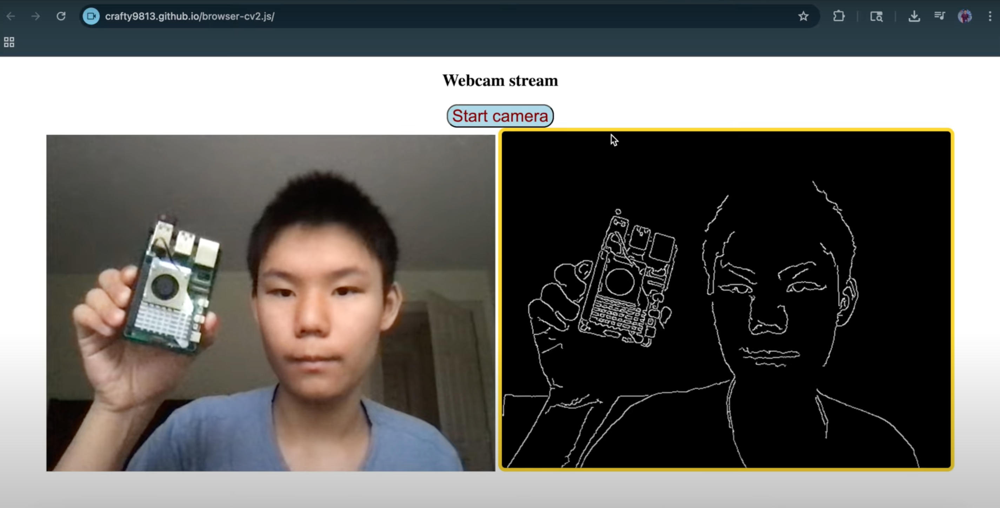

Hey there! My name is Jonathan Li, and I'm currently a sophomore in high
school. I'm really into autonomous robotics and ML. I've been building
cool things ever since I was young, and most of the stuff I do here is
self taught. I really thank my mom for all of her support in my passion. I
have a Youtube channel where I explain many of my projects, and my GitHub
has most of the code for them. Scroll down to view some of my work!
(Also as a sidenote sorry for website looking really sketchy, I just coded
it w/ pure HTML & CSS lol...no libraries like React)
Project Portfolio
I used RL (specifically Q-learning) for a "car" (yellow rectangle) to
reach a goal (green circle) in Python.
Displaying 3D models on Hiro (or other fiducial markers like QR codes)
using AR.js, I'm looking into VSLAM instead.

I created a web page using OpenCV.js to show computer vision
algorithms! Typically OpenCV is with Python, but this uses JS so no
Python backend needed!
Try it out here!
PyTorch digit classification using a CNN. Data is from the MNIST
dataset.
Sentiment analysis using sklearn in Python.
Facial feature recognition using Haar Cascades (pretty old but popular
and powerful algorithm).
Gesture controlled mouse using Google's Mediapipe API for hand
landmarks, & PyAutoGUI to actually control the mouse.
Raspberry Pi Apriltag follower using OpenCV & the apriltag library in
Python. I also added a "follow by ID" mode so it would be able to
perform a series of tasks.
LiDAR connected to Raspberry Pi real time data visualization in RViz
via SSH
I learned the basics of ROS! Gazebo & RViz sim shown.
HC-SR04 ultrasonic sensor motion lamp, mean't to make life easier,
especially for when you need to get up midnight.
Simple Arduino obstacle avoiding robot using LiDAR...works as a simple
DIY roomba I guess.
State-machine based autonomous robot to throw away trash (plastic
bottles).
GroundingDINO and PyTorch for FRC 2025 algae detection, helped by
mentor.
Played w/ YOLO11 pretrained object recognition.
Raspberry Pi facial recognition security camera, Haar Cascade based.
Stuff I brought to show at Open Sauce 2024!
My RC FPV strandbeest model (goal was to mimic an animal so you could
use it to monitor species...but uhhh clearly it doesn't quite look
like an animal...)
My custom Arduino swerve drive6 DOF 3D-printed arm
My Open Sauce 2024 experience & some cool (& famous) people I met!
My booth! Me explaning a dragonfly ornithopter mechanism which many
found interest in. This simple mechanism could be used for tiny drones,
although
I'm not too sure if it would be more efficient than just using
propellers
At my booth I showed my Arduino quadcopter which uses an MPU-6050 gyro and
accelerometer, a line follower using 2 IR sensors, a 3D-printed humanoid
hand, facial recognition on a Raspberry Pi, an ornithopter, ArUco marker
detection, and a simple HC-05 bluetooth RC car. It was very fun!
I met Veritasium!
Eternal Progression (Josh) was in the same hotel!
I met James Hobson (The Hacksmith)!I met Allen Pan!I met Tom Stanton!I met Styropyro (Drake)!I met Jake Laser (JLaserVideo)I met Joel (Joel Creates)!I met Peter Sripol!I met James Whomsley (Project Air)!